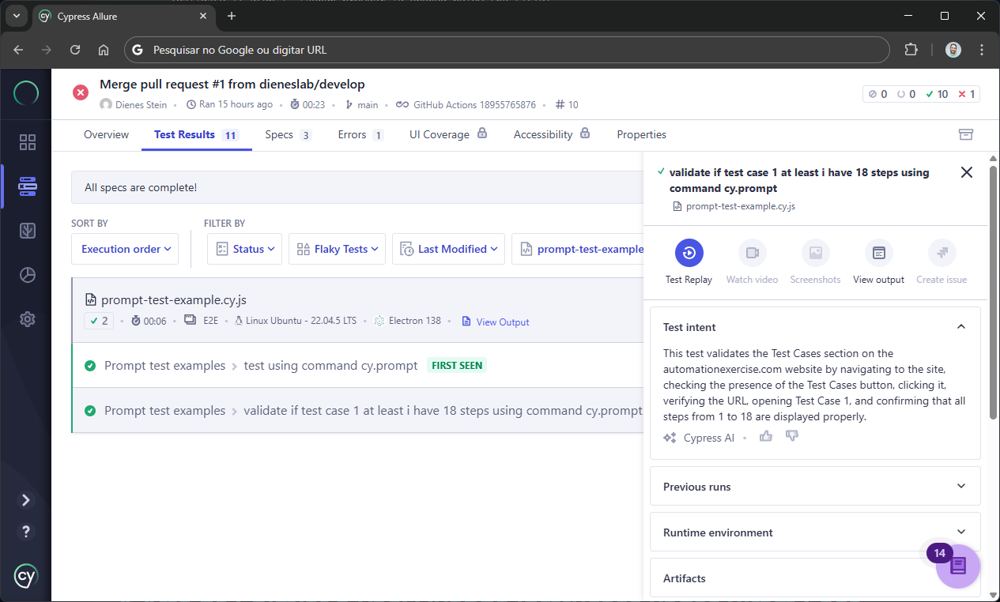

"Pegar o pão... passar a faca... dar uma grande mordida..." - se você já viu o vídeo viral das crianças explicando como chimiar o pão enquanto o pai segue literalmente cada instrução, vai entender perfeitamente minha experiência com o cy.prompt(). Mas vamos começar pelo técnico - prometo que o título fará mais sentido ao final!
Configuração Técnica Simples
Implementei o cy.prompt() seguindo uma abordagem prática e direta. Diferente de configurações complexas, optei pelo minimalismo funcional:
1. Package.json - Um Único Comando
{
"scripts": {
"test": "cypress run --record"
}
}2. GitHub Actions - Integração Contínua
- name: Run Cypress Tests
run: npm run test || true
env:
CYPRESS_RECORD_KEY: ${{ secrets.CYPRESS_RECORD_KEY }}3. Cypress.config.js - Habilitando o Experimental
module.exports = defineConfig({
projectId: "meu-project-id",
e2e: {
experimentalPromptCommand: true
}
})4. Execução Local (Alternativa sem CI)
# Execute diretamente no terminal:
npx cypress run --record --key "sua_record_key_aqui"
# Ou se preferir via npm:
npm run cypress --record --key "sua_record_key_aqui"💡 Importante: Você NÃO precisa do GitHub Actions para usar cy.prompt(). A integração contínua é opcional - o essencial é ter o Cypress a partir da versão 15.4.0 e ter o Cypress Cloud.
Obrigatoriedade do Cypress Cloud
⚠️ Atenção: Atualmente, durante sua fase experimental, o cy.prompt() REQUER obrigatoriamente:
- ✅ Conta no Cypress Cloud (gratuita)
- ✅ projectId (identificador do seu projeto)
- ✅ recordKey (chave de autenticação)
Como obter:
- Acesse Cypress Cloud e crie sua conta
- Conecte seu projeto seguindo o assistente
- Anote o
projectIdgerado nocypress.config.js - Gere sua
recordKeyem Project Settings → Record Keys
📝 Nota: Esta obrigatoriedade pode mudar quando o comando sair da fase experimental, mas por enquanto é essencial para o funcionamento.
Meus Testes Práticos com cy.prompt()
Implementei dois casos práticos para validar a funcionalidade:
describe('Prompt test examples', () => {
it('test using command cy.prompt', () => {
cy.prompt([
'visit the page http://example.cypress.io',
'and confirm text "Kitchen Sink" is present'
])
})
it('validate if test case 1 at least i have 18 steps using command cy.prompt', () => {
cy.prompt([
'Visit the page https://automationexercise.com/',
'validate if button Test Cases is present',
'click on button Test Cases',
'validate if url is correct https://automationexercise.com/test_cases',
'click on link Test Case 1: Register User',
'validate if step 1. Launch browser is opened below the title',
'validate next steps until step 18 is opened below the title',
])
})
})
Meus testes executando com sucesso no Cypress Cloud
A Arte de Chimiar o Pão: Quando Instruções Vagas Viram Caos

Vídeo: Exact Instructions Challenge - THIS is why my kids hate me. | Josh Darnit
No vídeo que inspirou este artigo, os filhos precisam explicar para o pai como "chimiar" o pão (termo do sul do Brasil que significa passar manteiga/geleia, derivado do alemão "schmieren" = untar).
O pai segue literalmente cada instrução, resultando em situações hilárias:
- 🍞 "Pegar o pão" → Pai pega o pão ainda dentro do saco
- 🔪 "Passar a faca" → Pai passa a faca sem manteiga
- 🧈 "Dar uma grande mordida" → Pai morde a fatia do pão seco
EXATAMENTE como me senti com meus primeiros prompts!
Minha Evolução: De "Pegar o Pão" para "Instruções de Chef"
❌ Meus Primeiros Prompts (O "Pegar o Pão" dos Testes):
// Tão vago quanto "pegar o pão"
cy.prompt(['click button', 'check if worked'])
// Resultado: Cypress clicava em QUALQUER botão✅ Prompts que Funcionaram (A "Receita do Chef"):
// Específico como uma receita de panificação
cy.prompt([
'Locate the "Test Cases" button in the header navigation',
'Wait for button to be visible and clickable',
'Click the button and wait 2 seconds for page transition',
'Verify current URL contains "/test_cases"',
'Scroll to section containing "Test Case 1: Register User"'
])A Lição que Transformou Meus Testes
Assim como no vídeo, onde instruções precisas transformam caos em um pão perfeito, descobri que:
A QUALIDADE DOS SEUS TESTES DEPENDE DIRETAMENTE DA QUALIDADE DAS SUAS INSTRUÇÕES
Princípios para Prompts Perfeitos:
1. Especificidade é Tudo
❌ "click login" → Qual login? Onde?
✅ "click the blue login button in the top-right corner"
2. Contexto e Localização
❌ "fill form" → Qual formulário? Quais campos?
✅ "in the contact form, fill name, email and message fields"
3. Validações Explícitas
❌ "check success" → O que significa sucesso?
✅ "verify green success message appears with text 'Thank you!'"
4. Timing e Esperas
❌ "go to page" → E se carregar lentamente?
✅ "navigate to URL and wait for loading spinner to disappear"
Conclusão: A Arte se Aprende na Prática
Aprendi com o cy.prompt() que automação de testes é, em essência, a arte de dar instruções precisas.
Assim como os filhos do vídeo aprenderam que "chimiar o pão" precisa ser: "Pegar uma fatia de pão do pacote, espalhar manteiga uniformemente com a faca, e levar à boca para dar uma mordida"
Eu aprendi que cada comando precisa ser:
- 🎯 Específico - sem ambiguidades
- 📍 Contextualizado - com localização clara
- ⏱️ Temporal - considerando tempos de espera
- ✅ Verificável - com critérios de sucesso explícitos
A grande lição: Se não sabemos descrever bem o que queremos testar, nunca teremos testes confiáveis. A falha não está na ferramenta, mas na nossa capacidade de comunicação com ela.
Vamos "chimiar" nossos testes hoje? 🍞✨
💼 Compartilhe essa experiência!
Se esta jornada com cy.prompt() fez sentido pra você, que tal levar essa discussão para o LinkedIn?
"Assim como no vídeo do 'chimiar pão', descobri que instruções precisas são a diferença entre testes robustos e falhas constantes. A arte de testar começa na arte de explicar!"